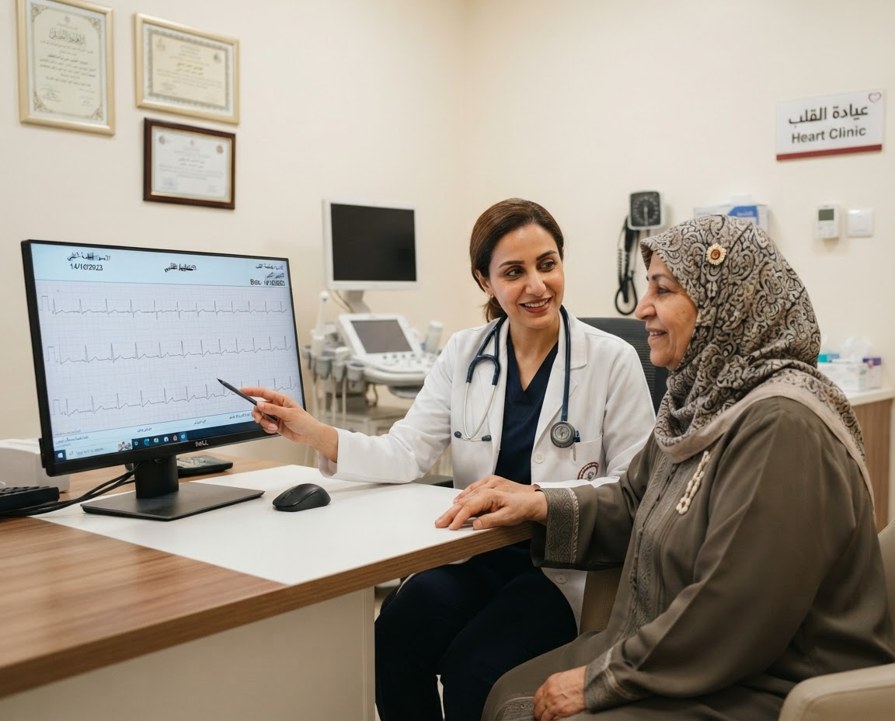

12 عامًا من الخبرة
12 عامًا من الخبرة
د. شريف حسين
طب القلب
نستمع لما يقلقك، ونهتم بصحة قلبك.
من مجالات اهتمامه
- ارتفاع ضغط الدمقراءات الضغط ومتابعتك
- اضطراب نبضات القلبنقيّم الخفقان ونتابع أعراضك
- الوقاية القلبيةالكوليسترول وعاداتك اليومية
عيادة القلب
جئت للاطمئنان أو لمتابعة قلبك؟ نستمع لما يشغلك، ونشرح لك حالتك وما تحتاجه خطوة بخطوة.
اطلب موعدًا للعيادة
نبدأ بما يشغلك.
12 عامًا من الخبرة
طب القلب
نستمع لما يقلقك، ونهتم بصحة قلبك.
من مجالات اهتمامه
نهتم بقلبك، ونسمعك.
من متابعة الضغط والنبض إلى العناية اليومية، نفهم ما يشغلك ونوضح لك الخطوة التالية.
تخصصات للعناية بقلبك.
من متابعة قلبك يومًا بيوم إلى الحالات المتخصصة، نوضح لك ما يناسبك.
تقييم اضطراب النبض ومراقبة التخطيط الكهربائي
الدعامات والقسطرة القلبية
الذبحة الصدرية وانسداد الشرايين
نفهم حالتك ونتابعها معك
نراجع ضغطك وعوامل الخطورة
تعرف ما ينتظرك.
حدّثنا عمّا يشغلك. نراجع معك أعراضك وتاريخك الصحي وأدويتك.
نراجع قياساتك وتقاريرك، ونشرح لك الفحوصات التي قد تحتاجها ولماذا.
نفهم نبض قلبك
تقييم بنية القلب ووظيفته
لنفهم صحتك أكثر
تعرف نتائجك، وخطوتك التالية، ومتى تعود للمتابعة.
خطوة للاهتمام بقلبك.
اطلب موعدك مع د. شريف حسين. نتواصل معك لترتيب الوقت وتأكيد التفاصيل.
نجيب عن أسئلتك.
إجابات تساعدك قبل الزيارة. يحدّد الطبيب ما يناسب حالتك.
لا يلزم الصيام عادةً للاستشارة. قد تتطلب بعض الفحوصات تحضيرًا خاصًا؛ سيشرح لك الفريق التعليمات عند تأكيد الموعد. لا توقف أي دواء دون توجيه طبي.
الخفقان لا يعني دائمًا وجود مرض بالقلب. يساعد الطبيب في معرفة سببه. إذا صاحبه ألم صدري أو إغماء أو ضيق نفس شديد، اطلب الطوارئ فورًا.
بعد الاستشارة، يشرح لك الطبيب الفحوصات اللازمة. ويؤكد الفريق توافرها ومواعيدها ومكانها وكيف تستعد لها.
قبل زيارتك، اسأل فريق الحجز عن توافر العيادة والموعد وقبول تأمينك. تختلف التغطية حسب وثيقتك والخدمة.